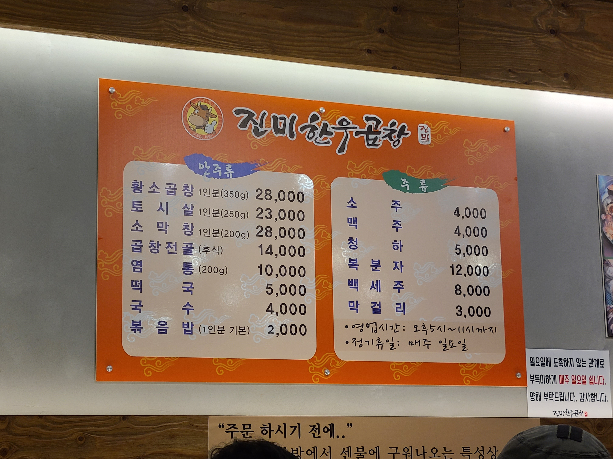

진미한우곱창
4.3
View : 69,457 | Write : 27 | Pick : 1,868
| 주소 |
서울특별시 강동구 천중로40길 50 서울시 강남구 삼성동 58-6 |
| 전화번호 | 02-488-7734 |
| 음식 종류 | 고기 요리 |
| 가격대 | 2만원-3만원 |
| 주차 | 무료주차 가능 |
| 영업시간 | 17:00 - 23:00 |
| 휴일 | 일 |
| 메뉴 |
황소곱창 (350g)
30,000원 토시살 (250g) 25,000원 소막창 (200g) 33,000원 곱창전골 14,000원  |
| 리뷰(27) |
전체 (27) | 맛있다 (20) | 괜찮다 (5) | 별로 (2) |
| 팬텀 | 대창이 참 실하다. 대창은 익자마자 바로 조지는게 곱창을 망치지 않는 길이다. 대창의 맛은 참 괜찮았다. 볶음밥도 시켰는데 이미 불판에 탄 부분이 많은 상태로 긁어내 위생적으로 걱정되었다. |
| 고균 | 청담 목살맛집 길목이에요! 퇴근시간에 가니깐 사람이 장난아니게 많더라구요! 기본적인 찬도 잘나왔구 껍살은 다른곳에서는 본적없었는데 궁금하더라구요 그래서 시켜봤습니다! 껍살은 껍데기 + 항정살을 합친게 껍살이라구하더라구요! 와 근데 진짜 대존맛인게 껍데기의 쫀득함과 목살의 부드러움이 섞여서 대박이었습니다.. 가격대는 조금 높지만 아깝지않은 그런맛이었어요!! 길목 강추합니다! |
| 정은 | 지.림 |